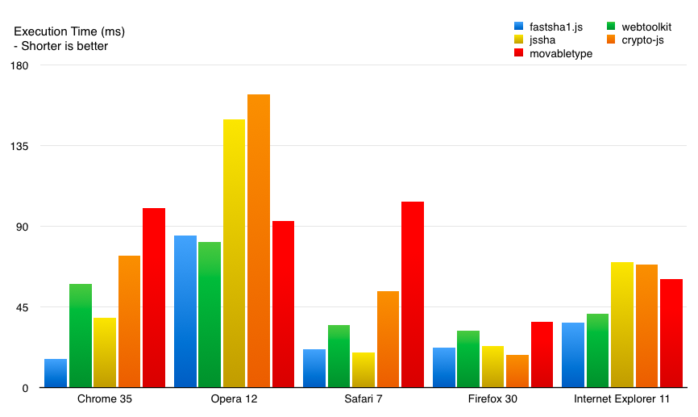

fastsha1.js is a experiment to see how far a existing JavaScript codebase can be hand optimized during a single night with a dash of insanity and a 500ml bottle of soda.
As of the time of writing, this seems to be the fastest pure JavaScript implementation of SHA-1 when run on Chrome (Tested on 35, where it reaches around 22MB/s hash rate on a Core i5 Macbook Air using the default dataset) and IE (Tested on 11). It's usually the second fastest on Presto Opera, Safari and Firefox. On Safari (Tested on 7) it should be just marginally slower than jsSHA, and on Firefox it's a bit slower than CryptoJS. On Presto Opera it happens to be slightly slower than the webtoolkit.info implementation, which I haven't investigated yet.
While it does generate the exact same hash as other implementations, this implementation has not been audited in any way or form so do avoid using it for anything serious.
For some reason, this page triggers a nasty bug in Firefox on mobile (namely, Firefox for Android and Firefox OS) which makes the page load take 30-50 minutes. I haven't analyzed what is triggering this, but don't try opening this on mobile Firefox for the time being.
Adjust how many iterations (samples) to be used in each run.
The data in the textarea will be used for the tests below.
Auto generate: Mixed (Default) Ascii Korean Japanese
First runs should normally be ignored, as there is JIT warm-up time. If the hash results differ between tests on the same data, something is really wrong!
The most dramatic performance increase is on Chrome (V8). While not listed here, based on testing with UIWebView and Opera 12 (JIT off), it is the fastest in the five implementations compared when run without JIT as well. SHA-1 hashing is a very specific operation, so the numbers across browsers should never be used as a reliable metric to compare browser performance.
All respective third party libraries are a copyright of their original authors. fastsha1.js is based on webtoolkit.info's implementation, with modifications focused on performance improvements. As the license of the original work has not been clearly disclosed, until that is sorted out the code for fastsha1.js will remain obfuscated for the time being.
Additionally, there is a completely useless by-product of this experiment which is the unrolled version of the main hashing loop, which turned out to be heavier than I anticipated. It's here for those who are interested.
Feedback is welcome via IRC (sangwhan at freenode), Twitter, or Github.